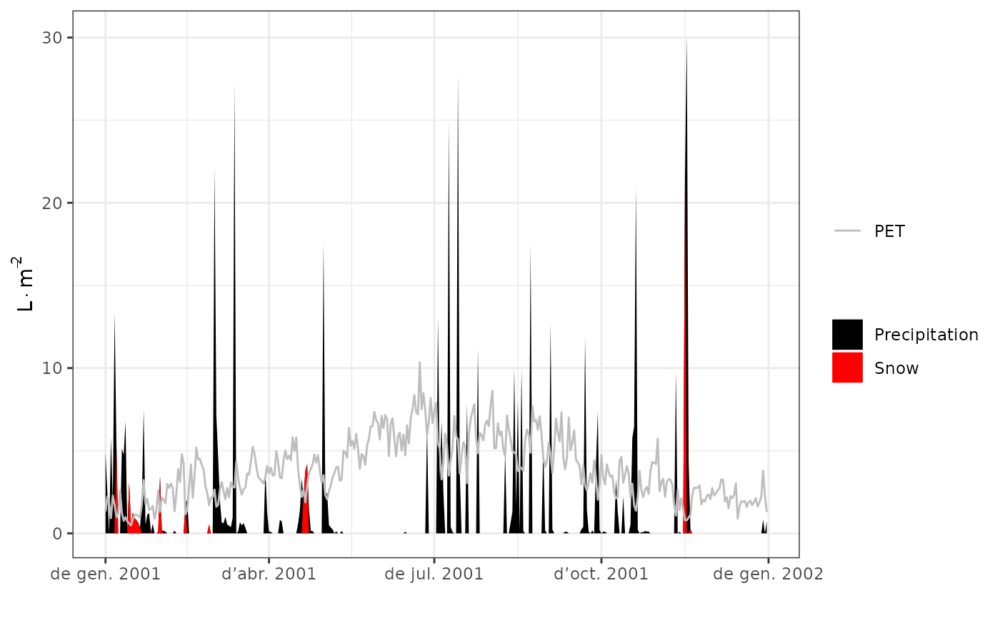

spwb.RdFunction spwb() is a water balance model that determines changes in soil moisture, soil water potentials, plant transpiration and drought stress at daily steps for a given forest stand during a period specified in the input climatic data. Function pwb() performs plant water balance only (i.e. soil moisture dynamics is an input) at daily steps for a given forest stand during a period specified in the input climatic data. On both simulation functions plant transpiration and photosynthesis processes are conducted with different level of detail depending on the transpiration mode.
An object of class spwbInput.
A data frame with daily meteorological data series. Row names of the data frame should correspond to date strings with format "yyyy-mm-dd" (see Date). When using the 'Granier' transpiration mode the following columns are required:
MeanTemperature: Mean temperature (in degrees Celsius).
Precipitation: Precipitation (in mm).
Radiation: Solar radiation (in MJ/m2/day), required only if snowpack = TRUE.
PET: Potential evapotranspiration (in mm).
When using the 'Sperry' transpiration mode the following columns are required:
MeanTemperature: Mean temperature (in degrees Celsius).
MinTemperature: Minimum temperature (in degrees Celsius).
MaxTemperature: Maximum temperature (in degrees Celsius).
MinRelativeHumidity: Minimum relative humidity (in percent).
MaxRelativeHumidity: Maximum relative humidity (in percent).
Precipitation: Precipitation (in mm).
Radiation: Solar radiation (in MJ/m2/day).
WindSpeed: Wind speed (in m/s). If not available, this column can be left with NA values.
CO2: Atmospheric (abovecanopy) CO2 concentration (in ppm). This column may not exist, or can be left with NA values. In both cases simulations will assume a constant value specified in defaultControl.
A matrix with the same number of rows as meteo and as many columns as soil layers, containing the soil moisture of each layer as proportion of field capacity.
Latitude (in degrees).
Elevation above sea level (in m), slope (in degrees) and aspect (in degrees from North). Required when using the 'Sperry' transpiration mode. Elevation is also required for 'Granier' if snowpack dynamics are simulated.
A vector of daily canopy evaporation (from interception) values (mm). The length should match the number of rows in meteo.
A vector of daily bare soil evaporation values (mm). The length should match the number of rows in meteo.
A vector of daily snow melt values (mm). The length should match the number of rows in meteo.
The model using 'Granier' transpiration mode is illustrated by function transp_transpirationGranier and described in De Caceres et al. (2015). Simulations using the 'Sperry' transpiration mode are computationally much more expensive, are described in De Cáceres et al. (2021) and are illustrated by function transp_transpirationSperry.
Function spwb returns a list of class 'spwb' whereas Function pwb returns a list of class 'pwb'. There are many elements in common in these lists, so they are listed here together:
"latitude": Latitude (in degrees) given as input.
"topography": Vector with elevation, slope and aspect given as input.
"weather": A copy of the input weather data frame.
"spwbInput": An copy of the object x of class spwbInput given as input.
"spwbOutput": An copy of the final state of the object x of class spwbInput.
"WaterBalance": A data frame where different variables (in columns) are given for each simulated day (in rows):
"PET": Potential evapotranspiration (in mm).
"Precipitation": Input precipitation (in mm).
"Rain": Precipitation as rain (in mm).
"Snow": Precipitation as snow (in mm).
"NetRain": Net rain, after accounting for interception (in mm).
"Infiltration": The amount of water infiltrating into the soil (in mm).
"Runoff": The amount of water exported via surface runoff (in mm).
"DeepDrainage": The amount of water exported via deep drainage (in mm).
"Evapotranspiration": Evapotranspiration (in mm).
"SoilEvaporation": Bare soil evaporation (in mm).
"PlantExtraction": Amount of water extracted from soil by plants (in mm) (can only be different from transpiration for transpirationMode = "Sperry" when capacitance is considered).
"Transpiration": Plant transpiration (considering all soil layers) (in mm).
"HydraulicRedistribution": Water redistributed among soil layers, transported through the plant hydraulic network (only for transpirationMode = "Sperry").
"EnergyBalance": A data frame with the daily values of energy balance components for the soil and the canopy (only for transpirationMode = "Sperry").
"Temperature": A data frame with the daily values of minimum/mean/maximum temperatures for the atmosphere (input), canopy and soil (only for transpirationMode = "Sperry").
"Soil": A data frame where different variables (in columns) are given for each simulated day (in rows):
"W.1", ..., "W.k": Relative soil moisture content (relative to field capacity) in each soil layer.
"ML.1", ..., "ML.k": Soil water volume in each soil layer (in L/m2).
"MLTot": Total soil water volume (in L/m2).
"SWE": Snow water equivalent (mm) of the snow pack.
"PlantExt.1", ..., "PlantExt.k": Plant extraction from each soil layer (in mm).
"HydraulicInput.1", ..., "HydraulicInput.k": Water that entered the layer coming from other layers and transported via the plant hydraulic network (in mm) (only for transpirationMode = "Sperry").
"psi.1", ..., "psi.k": Soil water potential in each soil layer (in MPa).
"Stand": A data frame where different variables (in columns) are given for each simulated day (in rows):
"LAI": LAI of the stand (including live and dead leaves) (in m2/m2).
"LAIlive": LAI of the stand assuming all leaves are unfolded (in m2/m2).
"LAIexpanded": LAI of the stand of leaves actually unfolded (in m2/m2).
"LAIdead": LAI of the stand corresponding to dead leaves (in m2/m2).
"Cm": Water retention capacity of the canopy (in mm) (accounting for leaf phenology).
"LgroundPAR": The percentage of PAR that reaches the ground (accounting for leaf phenology).
"LgroundSWR": The percentage of SWR that reaches the ground (accounting for leaf phenology).
"Plants": A list of daily results for plant cohorts (see below).
"subdaily": A list of objects of class spwb_day, one per day simulated (only if required in control parameters, see defaultControl).
When transpirationMode = "Granier", element "Plants" is a list with the following subelements:
"LAI": A data frame with the daily leaf area index for each plant cohort.
"LAIlive": A data frame with the daily leaf area index for each plant cohort, assuming all leaves are unfolded (in m2/m2).
"AbsorbedSWRFraction": A data frame with the fraction of SWR absorbed by each plant cohort.
"Transpiration": A data frame with the amount of daily transpiration (in mm) for each plant cohort.
"GrossPhotosynthesis": A data frame with the amount of daily gross photosynthesis (in g C·m-2) for each plant cohort.
"PlantPsi": A data frame with the average daily water potential of each plant (in MPa).
"StemPLC": A data frame with the average daily proportion of stem conductance loss of each plant ([0-1]).
"PlantWaterBalance": A data frame with the daily balance between transpiration and soil water extraction for each plant cohort.
"LeafRWC": A data frame with the average daily leaf relative water content of each plant (in percent).
"StemRWC": A data frame with the average daily stem relative water content of each plant (in percent).
"LFMC": A data frame with the daily live fuel moisture content (in percent of dry weight).
"PlantStress": A data frame with the amount of daily stress [0-1] suffered by each plant cohort (relative whole-plant conductance).
If transpirationMode="Sperry", element "Plants" is a list with the following subelements:
"LAI": A data frame with the daily leaf area index for each plant cohort.
"AbsorbedSWR": A data frame with the daily SWR absorbed by each plant cohort.
"NetLWR": A data frame with the daily net LWR by each plant cohort.
"Transpiration": A data frame with the amount of daily transpiration (in mm) for each plant cohorts.
"GrossPhotosynthesis": A data frame with the amount of daily gross photosynthesis (in g C·m-2) for each plant cohort.
"NetPhotosynthesis": A data frame with the amount of daily net photosynthesis (in g C·m-2) for each plant cohort.
"dEdP": A data frame with mean daily values of soil-plant conductance (derivative of the supply function) for each plant cohort.
"PlantWaterBalance": A data frame with the daily balance between transpiration and soil water extraction for each plant cohort.
"SunlitLeaves" and "ShadeLeaves": A list with daily results for sunlit and shade leaves:
"PsiMin": A data frame with the minimum (midday) daily sunlit or shade leaf water potential (in MPa).
"PsiMax": A data frame with the maximum (predawn) daily sunlit or shade leaf water potential (in MPa).
"LeafPsiMin": A data frame with the minimum (midday) daily (average) leaf water potential of each plant (in MPa).
"LeafPsiMax": A data frame with the maximum (predawn) daily (average) leaf water potential of each plant (in MPa).
"LeafRWC": A data frame with the average daily leaf relative water content of each plant (in percent).
"StemRWC": A data frame with the average daily stem relative water content of each plant (in percent).
"LFMC": A data frame with the daily live fuel moisture content (in percent of dry weight).
"StemPsi": A data frame with the minimum daily stem water potential of each plant (in MPa).
"StemPLC": A data frame with the average daily proportion of stem conductance loss of each plant ([0-1]).
"RootPsi": A data frame with the minimum daily root water potential of each plant (in MPa).
"RhizoPsi": A list of data frames (one per plant cohort) with the minimum daily root water potential of each plant (in MPa).
"PlantStress": A data frame with the amount of daily stress [0-1] suffered by each plant cohort (relative whole-plant conductance).
De Cáceres M, Martínez-Vilalta J, Coll L, Llorens P, Casals P, Poyatos R, Pausas JG, Brotons L. (2015) Coupling a water balance model with forest inventory data to predict drought stress: the role of forest structural changes vs. climate changes. Agricultural and Forest Meteorology 213: 77-90 (doi:10.1016/j.agrformet.2015.06.012).
De Cáceres M, Mencuccini M, Martin-StPaul N, Limousin JM, Coll L, Poyatos R, Cabon A, Granda V, Forner A, Valladares F, Martínez-Vilalta J (2021) Unravelling the effect of species mixing on water use and drought stress in holm oak forests: a modelling approach. Agricultural and Forest Meteorology 296 (doi:10.1016/j.agrformet.2020.108233).
#Load example daily meteorological data
data(examplemeteo)
#Load example plot plant data
data(exampleforestMED)
#Default species parameterization
data(SpParamsMED)
#Initialize soil with default soil params (4 layers)
examplesoil = soil(defaultSoilParams(4))
#Initialize control parameters
control = defaultControl("Granier")
#Initialize input
x1 = forest2spwbInput(exampleforestMED,examplesoil, SpParamsMED, control)
#Call simulation function
S1<-spwb(x1, examplemeteo, latitude = 41.82592, elevation = 100)
#> Initial soil water content (mm): 291.257
#> Initial snowpack content (mm): 0
#> Performing daily simulations
#>
#> [Year 2001]:....................................
#>
#> Final soil water content (mm): 269.534
#> Final snowpack content (mm): 0
#> Change in soil water content (mm): -21.7226
#> Soil water balance result (mm): -21.7226
#> Change in snowpack water content (mm): 0
#> Snowpack water balance result (mm): 7.10543e-15
#> Water balance components:
#> Precipitation (mm) 513
#> Rain (mm) 462 Snow (mm) 51
#> Interception (mm) 98 Net rainfall (mm) 364
#> Infiltration (mm) 406 Runoff (mm) 9 Deep drainage (mm) 75
#> Soil evaporation (mm) 19 Transpiration (mm) 334
#> Plant extraction from soil (mm) 334 Plant water balance (mm) -0
#Plot results
plot(S1)

#Monthly summary (averages) of soil water balance
summary(S1, freq="months",FUN=mean, output="Soil")
#> W.1 W.2 W.3 W.4 ML.1 ML.2 ML.3
#> 2001-01-01 0.9846019 0.9978340 0.9996193 1.0113763 67.21217 116.55308 75.81923
#> 2001-02-01 0.9202217 0.9754962 0.9946205 0.9966726 62.81736 113.94389 75.44008
#> 2001-03-01 0.9375601 0.9827316 0.9967875 1.0057258 64.00094 114.78903 75.60444
#> 2001-04-01 0.8295637 0.9149175 0.9782107 0.9862069 56.62874 106.86792 74.19542
#> 2001-05-01 0.8632186 0.8919633 0.9579872 0.9697738 58.92614 104.18673 72.66151
#> 2001-06-01 0.6443019 0.7441196 0.8691979 0.8975940 43.98217 86.91769 65.92701
#> 2001-07-01 0.8564210 0.7892369 0.7746556 0.8006207 58.46212 92.18766 58.75616
#> 2001-08-01 0.8466149 0.8496210 0.7764187 0.7951019 57.79272 99.24089 58.88988
#> 2001-09-01 0.8522057 0.8701371 0.7791604 0.7919275 58.17436 101.63730 59.09784
#> 2001-10-01 0.8784378 0.8823326 0.7805785 0.7894087 59.96505 103.06181 59.20540
#> 2001-11-01 0.9182623 0.9485583 0.8737731 0.8622959 62.68360 110.79737 66.27403
#> 2001-12-01 0.8723562 0.9586848 0.9923456 0.9958767 59.54990 111.98021 75.26753
#> ML.4 MLTot WTD SWE PlantExt.1 PlantExt.2
#> 2001-01-01 30.68439 290.2689 3963.285 1.68350931 0.2256681 0.1015801
#> 2001-02-01 30.23829 282.4396 4000.000 0.28233380 0.4065944 0.2629261
#> 2001-03-01 30.51296 284.9074 3976.978 0.01762496 0.4429293 0.2573294
#> 2001-04-01 29.92077 267.6129 4000.000 0.58931434 0.4517386 0.3957170
#> 2001-05-01 29.42220 265.1966 4000.000 0.00000000 0.6139936 0.3855146
#> 2001-06-01 27.23232 224.0592 4000.000 0.00000000 0.3901608 0.6671412
#> 2001-07-01 24.29022 233.6962 4000.000 0.00000000 1.0457640 0.2220857
#> 2001-08-01 24.12279 240.0463 4000.000 0.00000000 0.9331768 0.3958276
#> 2001-09-01 24.02648 242.9360 4000.000 0.00000000 0.7072466 0.3384964
#> 2001-10-01 23.95006 246.1823 4000.000 0.00000000 0.5248046 0.2263424
#> 2001-11-01 26.16140 265.9164 3993.365 2.67673914 0.3477128 0.1894635
#> 2001-12-01 30.21414 277.0118 4000.000 0.00000000 0.2581153 0.2174134
#> PlantExt.3 PlantExt.4 psi.1 psi.2 psi.3
#> 2001-01-01 0.010223130 0.002691065 -0.03600192 -0.03341130 -0.03307199
#> 2001-02-01 0.032098031 0.007880029 -0.05301429 -0.03793529 -0.03398776
#> 2001-03-01 0.029558291 0.007546458 -0.04697359 -0.03610213 -0.03352664
#> 2001-04-01 0.073833295 0.019491967 -0.08842164 -0.05294595 -0.03711392
#> 2001-05-01 0.086635899 0.024109695 -0.08241158 -0.06071295 -0.04132444
#> 2001-06-01 0.381138185 0.136616085 -0.33327808 -0.16315670 -0.07230257
#> 2001-07-01 0.049500365 0.018643236 -0.10209767 -0.12637015 -0.12065897
#> 2001-08-01 0.016093229 0.005015441 -0.08436399 -0.07627467 -0.11907213
#> 2001-09-01 0.010814307 0.003065262 -0.07880645 -0.06747193 -0.11696819
#> 2001-10-01 0.007055502 0.001893120 -0.06803427 -0.06364537 -0.11586644
#> 2001-11-01 0.009628993 0.002272021 -0.05343413 -0.04392037 -0.07708214
#> 2001-12-01 0.030228494 0.007635518 -0.06895400 -0.04144851 -0.03438733
#> psi.4
#> 2001-01-01 -0.03130334
#> 2001-02-01 -0.03360933
#> 2001-03-01 -0.03225967
#> 2001-04-01 -0.03554586
#> 2001-05-01 -0.03874978
#> 2001-06-01 -0.06058740
#> 2001-07-01 -0.10233664
#> 2001-08-01 -0.10568469
#> 2001-09-01 -0.10780597
#> 2001-10-01 -0.10953320
#> 2001-11-01 -0.08009714
#> 2001-12-01 -0.03374459
if (FALSE) {
#Switch to 'Sperry' transpiration mode
control = defaultControl("Sperry")
#Initialize input
x2 = forest2spwbInput(exampleforestMED,examplesoil, SpParamsMED, control)
#Call simulation function (11 days)
d = 100:110
S2<-spwb(x2, examplemeteo[d,], latitude = 41.82592, elevation = 100)
# Run the model with 'Sperry' transpiration mode using the water balance of
# simulated with the 'Granier' model
WS = as.matrix(S1$Soil[, c("W.1", "W.2", "W.3", "W.4")])
P2<-pwb(x2, examplemeteo[d,], latitude = 41.82592, elevation = 100,
W = WS[d,],
canopyEvaporation = S1$WaterBalance$Interception[d],
snowMelt = S1$WaterBalance$Snowmelt[d],
soilEvaporation = S1$WaterBalance$SoilEvaporation[d])
}